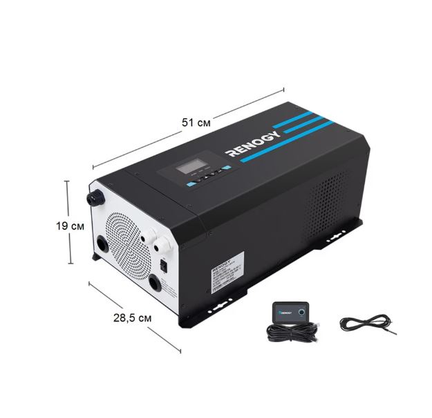
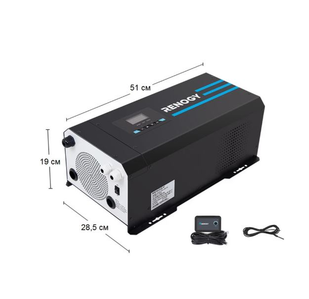
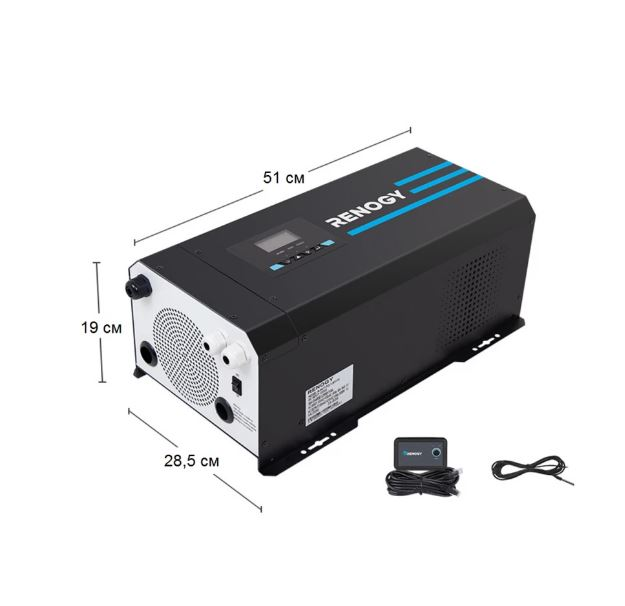
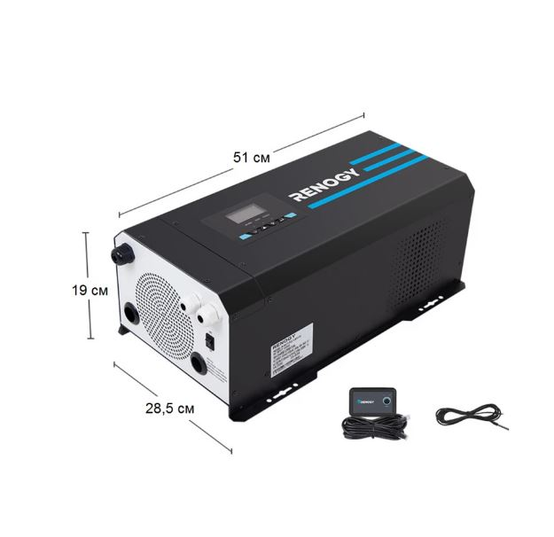

| Бренд | Renogy |
| Вага | 28,8 кг |
| Вид | Інвертор |
| Колір | Чорний |
| Країна реєстрації бренду | США |
| Потужність | 3000 Вт |
| Призначення | Для дому, кемпінгу, будинку на колесах |
| Особливості | Чиста синусоїда |
| Розмір | 51x28,5x19 см |
| Сумісність з батареями | 12V Gel, AGM, SLA, FLD, CAL, LI і програмовані користувальницькі батареї |
| Постійна потужність | 3000 Вт |
| Пікова потужність | 9000 Вт |
| Ефективність | Більше 90% |
| Система зарядки | 4-ступінчаста |
| Захист | Від перенапруги/недонапруги, перевантаження, перегріву та короткого замикання |
| Дисплей | LCD-дисплей для візуального контролю статусу інвертора та виконання програмних операцій |
Інвертор Renogy 3000 Вт із чистою синусоїдальною напругою та LCD-дисплеєм – ідеальне рішення для використання в автобудинках (RV) або автономних системах. Renogy 3000W Pure Sine Wave Inverter Charger не тільки діє як перетворювач постійного струму в змінний струм, дозволяючи вам живити побутові прилади, але також заряджає та підтримує батарейний банк при підключенні до мережі, а тепер сумісний з літієвими батареями. З низьким часом перемикання енергія залишається безперервною під час переходу від батареї до мережного живлення. Просунута технологія чистої синусоїдальної напруги Renogy захищає та продовжує термін служби ваших електронних пристроїв та побутових приладів. Renogy 3000W Pure Sine Wave Inverter Charger – ідеальне джерело резервного живлення!